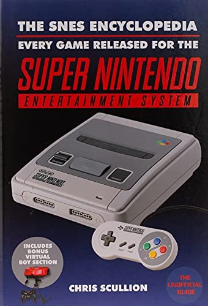

Super Nintendo Entertainment System
Efter Segas framgång med sin 16-bitars Mega Drive tvingades Nintendo att lansera någonting nytt.
Uppgiften att konstruera den nya konsolen fick Masayuki Uemura.
Super Famicom släpptes 21 november 1990 i Japan, konsolen blev en omedelbar succé och Nintendo hade problem med att möta den stora efterfrågan,
vissa affärer anordnade lotterier om vilka som skulle få köpa konsolerna.
Super Famicom såldes utan medföljande spel medan Super Nintendo som släpptes i USA och delar av Europa 1991 levererades tillsammans med Super Mario World.
SNES släpptes i Sverige den 4 juni 1992.
Reklam
Populära spel
Super Mario World
Super Mario All-stars
Donkey Kong Country